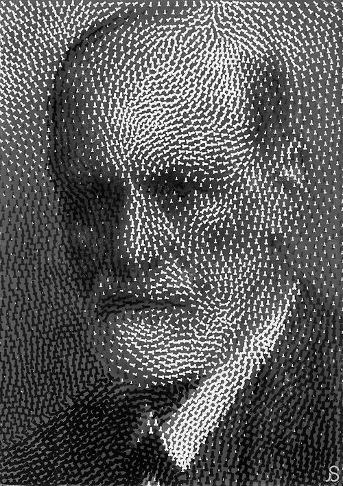

DESIGN POSTER
Selamat datang di design poster saya ini, tempat di mana ide-ide bertemu visual! Setiap poster dibuat untuk tidak hanya enak dipandang, tapi juga mampu menyampaikan pesan secara efektif dan menarik.
Lihat DetailLagi belajar jadi web developer dan UI/UX designer, pengen bikin solusi digital yang kekinian dan ringan.
Saya punya ketertarikan besar pada dunia pengembangan web. Saya suka sekali merancang dan membangun website yang terlihat modern, terasa interaktif saat digunakan, dan tentu saja memiliki estetika yang menarik. Bagi saya, kepuasan pengguna adalah yang terpenting, dan saya selalu berusaha memberikan pengalaman terbaik melalui karya-karya saya.
Selamat datang di design poster saya ini, tempat di mana ide-ide bertemu visual! Setiap poster dibuat untuk tidak hanya enak dipandang, tapi juga mampu menyampaikan pesan secara efektif dan menarik.
Lihat DetailTemplate portofolio pribadi modern dan interaktif, dirancang untuk menampilkan karya secara profesional.
Lihat Detail
Studi desain UI/UX untuk aplikasi mobile modern dengan fokus pada pengalaman pengguna yang intuitif.
Lihat Detail"Davanico adalah seorang profesional yang sangat berbakat. Karyanya selalu memukau dan memenuhi harapan!" - Client A
"Sangat menyenangkan bekerja sama dengan Davanico. Dia selalu memberikan ide-ide segar dan inovatif." - Client B
Deskripsi singkat tentang proyek 4 yang menunjukkan kemampuan dan kreativitas Anda.
Lihat Detail
Deskripsi singkat tentang proyek 5 yang menunjukkan kemampuan dan kreativitas Anda.
Lihat DetailTertarik untuk berkolaborasi atau sekadar menyapa? Jangan ragu untuk menghubungi saya melalui: